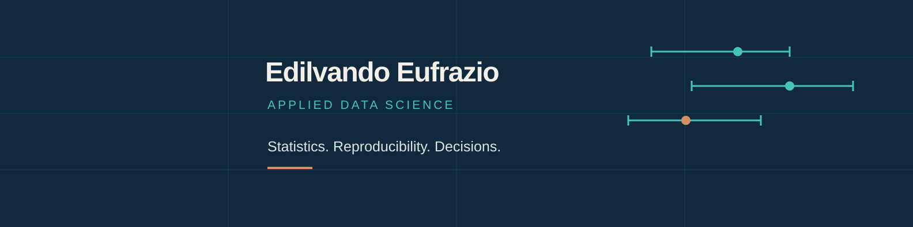

Sistema de identidade pessoal · versão 1 · 16 outubro 2026
Edilvando
Eufrazio
Uma assinatura para apresentar trabalho de ciência de dados com clareza, rigor e personalidade.
A ideia
O símbolo reúne três estimativas com seus intervalos. O ponto representa uma conclusão; a extensão da linha lembra que toda estimativa tem contexto e incerteza. É uma composição gráfica, sem valores de uma análise. Esse vocabulário conecta estatística, pesquisa e decisões de negócio, sem limitar sua identidade a um setor.
Paleta
Azul profundo
#10293D
Verde-petróleo
#007E84
Papel
#F4F0E8
Cobre
#C26642
Azul para estrutura e texto. Petróleo para destaque principal. Cobre para uma exceção relevante ou alerta analítico. Papel como fundo. Para texto pequeno, preferir azul sobre papel ou branco; reservar cobre para elementos gráficos e títulos grandes.
Tipografia e composição
| Uso | Especificação |
|---|
| Títulos | Arial/Helvetica ou sans-serif do sistema, peso 700, poucas palavras, alinhados à esquerda. |
| Corpo | 16–18 px na web, entrelinha 1,55–1,7. Uma ideia por parágrafo. |
| Números | Algarismos tabulares. Unidade e período sempre visíveis. Evitar casas decimais sem utilidade. |
| Gráficos | Fundo claro, rótulos diretos, uma cor de destaque, linhas de referência discretas. Cor acompanha forma, texto ou posição para manter acessibilidade. |
| Assinatura | Nome completo na primeira apresentação. Símbolo isolado em favicon ou espaço reduzido. Margem livre de pelo menos 1/4 da altura do símbolo. |
Aplicação no LinkedIn

A capa tem 1584 × 396 px e reserva a região inferior esquerda para a foto. Conferir os recortes de computador e celular antes de aplicar. Não foi alterada sua capa atual.
Assinatura editorial
Edilvando Eufrazio
Applied Data Science
Statistics. Reproducibility. Decisions.
Nos projetos públicos: indicar a fonte, a pergunta, a decisão metodológica, a principal descoberta e o limite. Usar inglês para a apresentação internacional. Manter o mesmo cabeçalho e assinatura nas figuras, README e dashboards.
Assinatura vetorial · Símbolo vetorial · Capa editável · Capa PNG